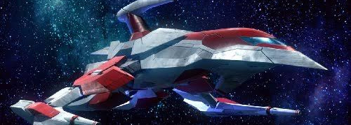

Darius es una franquicia de videojuegos de disparos desarrollada y publicada por Taito. El primer juego del mismo nombre se lanzo en febrero de 1987 para salas de juegos, y desde entonces ha sido seguido por seis secuelas y varios derivados. La serie tiene lugar durante los eventos de una guerra entre humanos y el imperio de Belsar. , que conspiran para destruir todo lo que queda de la humanidad. Darius es conocido por sus caminos ramificados en el escenario, su alegre banda sonora y sus enemigos inspirados en la vida marina.
La serie aparecio por primera vez en los centros de juego japoneses en 1987, donde Darius se hizo conocido por su configuracion de maquina arcade de pantalla triple "colosal" y sus asientos sonicos corporales. Fue conocido como el primer juego de arcade en combinar "ingeniería de alto impacto" con "presentacion creativa". En comparacion con la tecnologia de Ultra Panavision 70 en la forma en que la serie utilizo el color, también uso un formato de etapa de ramificacion "innovador" que permitio que multiples partidas fueran diferentes en formas importantes. La serie tambien es conocida por sus bonitos graficos, su animada banda sonora y sus efectos de sonido.

El uso de la serie de peces roboticos, crustaceos y otras criaturas marinas como enemigos se cito como una forma de hacer que los juegos se destaquen debido a la proliferacion de juegos de disparos arcade de ciencia ficción a mediados de la decada de 1980.
Gran parte de la informacion aqui expuesta ha sido tomada de Wikipedia